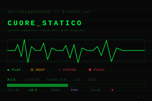
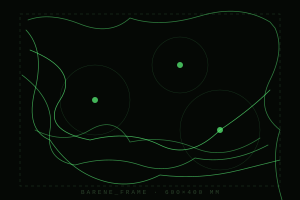
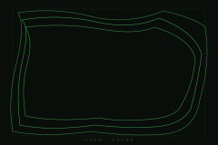
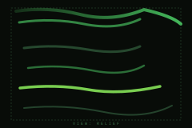
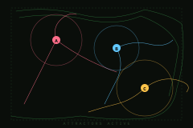

Studio audio modulare costruito su Tone.js. Combina sintetizzatori multi-voce (pad, lead, bass, drones), sampler con triggering manuale e a pattern, una catena di effetti dub (riverbero, delay con feedback, auto-filter), e un registratore integrato per catturare la jam in tempo reale.
L'estetica è quella di un monitor di telemetria post-punk — display verde fosforo, meter dB, indicatore di pulsazione cardiaca. Pensato per sessioni dal vivo o registrazione veloce di idee, con tutti i parametri sempre visibili e nessun menu nascosto.
Funziona su tutti i browser moderni che supportano Web Audio API e MediaStream. Su iOS Safari serve un tap iniziale per attivare il context audio (il pulsante PLAY lo fa automaticamente). Su mobile la latenza è leggermente più alta — è normale, dipende dal browser, non dal tool.
// Tone.js v14.7.77 caricato da CDN — serve connessione la prima volta, poi è in cache.
synth + sampler + recorder + dub_engine completo, MediaStream WAV export
Cuore_Statico non ha preset save/load nel localStorage — è un tool live-performance, lo stato è effimero per design. Per esportare il lavoro usa la sezione REC che produce un WAV scaricabile.

Generatore parametrico di cornici biomorfiche per speaker da fondere in acciaio. Combina pattern di meandri di marea (ispirati alle barene del lido di Venezia) con un sistema di tre attrattori-vortice trascinabili che funzionano da generatori di tributari connessi, simulando la formazione di reti deltizie.
L'output finale è un OBJ a heightmap piramidale, pronto per stampa PLA (ugello 0.4 mm) e fusione in sabbia. La base piatta e i fianchi inclinati garantiscono il distacco pulito dal negativo.



// i preset sono salvati nel browser locale. Per spostarli usa export/import. Dentro al tool premi ⌘S per crearne di nuovi.